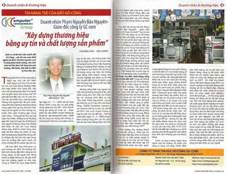

Tài Năng Trẻ Của Đất Gò Công “Xây Dựng Thương Hiệu Bằng Uy Tín Và Chất Lượng Sản Phẩm”
Sinh ra và lớn lên trên mảnh đất Gò Công – cái nôi của cuộc khởi nghĩa do Bình Tây Đại nguyên soái Trương Định khởi xướng, nên Anh luôn bị thôi thúc bởi lòng yêu quê hương, đất Nước, đặt biệt là niềm tự hào dân tộc.
Trong tình hình xã hội năng động ngày nay, nhu cầu tìm kiếm một công cụ tin học hỗ trợ đắc lực cho các hoạt động thường nhật, tích hợp nhiều tính năng độc đáo như một phương tiện đưa mọi người xích lại gần nhau hơn trong một thế giới hài hồ đầy màu sắc là một nhu cầu hết sức thiết thực, một bộ phận không nhỏ người dân đã xem chiếc máy tính như một thực thể sống động trong ngôi nhà của họ, đôi khi chiếc máy còn là người sẻ chia những vui, buồn, hờn, giận thường gặp trong cuộc sống…
Cũng giống như các loại máy móc khác, những sự cố thường gặp trên máy tính gây rắc rối không ít cho người sử dụng cũng như những khó khăn về việc tìm mua những dòng máy, thiết bị chính hãng phù hợp với khả năng tài chính và mục đích sử dụng của người tiêu dùng vẫn là những câu hỏi còn bỏ ngỏ trong một thị trường đầy cạnh trạnh, ẩn chứa những bất ổn, phức tạp vốn có.
Với mục đích duy nhất phục vụ quê hương, ổn định thị trường còn khá mới nhưng đầy tiềm năng tại Gò Công, phục vụ tốt người tiêu dùng trước sự thiếu thông tin, dễ gây thiệt hại cho những người có nhu cầu. Công ty TNHH GC Com được thành lập ngày 23 – 11 – 2006 với các hoạt động chính: cung cấp các giải pháp công nghệ cao cho DN – kinh doanh hàng gia dụng kỹ thuật số – phân phối các sản phẩm truyền thông kỹ thuật số – gia công phần mềm – thiết kế, thi công các mạng viễn thông.
Là một lập trình viên một doanh nhân trẻ, có sự đam mê tin học từ rất sớm, với những kiến thức tích luỹ được từ thời còn là sinh viên, trở lại quê hương, thực hiện hồi bảo bằng con đường khởi nghiệp từ một cửa hàng tin học khiêm tốn tại thị xã, chỉ trong vòng nửa năm, do những hoạt động kinh doanh mang tính chuyên nghiệp, tạo được uy tín khá lớn, chuyển đổi mô hình thành trung tâm thương mại, dịch vụ tin học đầu tiên tại Gò Công.

Ảnh đăng trên báo Doanh nhân Việt Nam 07/2008
Những cống hiến của người con Tiền Giang không dừng lại ở đó, năm 2006 trung tâm liên tiếp cho thành lập các chương trình dịch vụ như “Alo, help” Phản ứng nhanh , cứu hộ kịp thời các sự cố máy tính của khách hàng, CSIOM ( Customer success is our mission ) hỗ trợ, tư vấn các vấn đề về CNTT một cách nhanh chóng và hợp lý nhất cho các đối tác…
Ngoài ra với sự đam mê lập trình của mình anh đã cống hiến không ít cho cộng đồng Open Source Việt Nam những bộ mã nguồn do chính mình viết ra tiêu biểu là bộ tứ miễn phí đã được đăng trên diễn đàn Freecode mã nguồn mở lớn nhất Việt Nam hiện nay. Không những thế anh còn là người khởi xướng xây dựng một hệ thống trực tuyến cho cộng đồng phần cứng và phần mềm Việt Nam được nhiều người biết đến tại địa chỉ http://www.kythuatvien.com.
Trên đà phát triển ngày 12 – 3 – 2008 công ty khai trương trung tâm cứu hộ, phục hồi dữ liệu hoạt động theo mô hình như một bệnh viện máy tính, thành công nối tiếp thành công, đến nay công ty thực sự trở thành cánh chim đầu đàn trong lãnh vực viễn thông, tin học tại Tiền Giang và khu vực Nam Bộ
Trao đổi với chúng tôi anh Phạm Nguyễn Bảo Nguyên – giám đốc công ty GC Com cho biết “Tuy các sản phẩm CNTT đa dạng và có rất nhiều thương hiệu nổi tiếng, nhưng việc lựa chọn một sản phẩm phù hợp với nhu cầu của người tiêu dùng thì không dễ, chính chất lượng sản phẩm và dịch vụ cung cấp, uy tín trong hoạt động kinh doanh cùng sự tận tâm hết mình vì khách hàng, GC Com đã tạo dựng được thương hiệu, chỗ đứng trong lòng mọi người”, anh cho rằng bán hàng là cả một nghệ thuật, không những cung ứng cho khách hàng một sản phẩm để thu lợi nhuận mà trên hết phải tư vấn giúp họ có được một sản phẩm vừa ý, chất lượng tốt vàphù hợp về giá cả.
Với phương châm hoạt động “ Giá đúng, chu đáo, chất lượng, sáng tạo và luôn đổi mới”Cùng với những dịch vụ hậu mãi tốt, GC Com đã được nhiều đối tác tiềm năng tín nhiệm. Với các định hướng : Xây dựng một nền văn hố doanh nghiệp vững mạnh cùng một đội ngũ nhân viên năng động luôn học hỏi trau dồi, kiến thức, áp dụng các mô hình quản lý doanh nghiệp tiên tiến trên thế giới ISO 9001, ISO 14000 công ty phấn đấu trở thành nhà sản xuất, lắp ráp máy tính thương hiệu GC Com, máy tính thương hiệu Việt đầu tiên tại khu vực đồng bằng sông Cửu Long, đồng thời là nhà cung cấp hàng đầu các giải pháp công nghệ, cung cấp các dịch vụ hồn hảo nhất tiến tới các hình thức đấu thầu chuyên nghiệp trong lãnh vực viễn thông, CNTT.
Minh chứng cho những thành công vừa kể, công ty được tạp chí thương hiệu Việt bầu chọn là thương hiệu uy tín và chất lượng, ngồi ra còn là công ty tin học tại Gò Công duy nhất ba năm liền được tạp chí PC World bình chọn vào niên giám công nghệ thông tin và truyền thông, vì thế khi đến GC Com khách hàng sẽ luôn hài lòng trước đội ngũ nhân viên chuyên nghiệp, sẵn sàng giải đáp mọi thắc mắc và tư vấn một cách rõ ràng, chính xác nhằm giúp những khách hàng dù là khó tính nhất cũng tìm được cho mình một sản phẩm vừa ý.
Anh Phạm Nguyễn Bảo Nguyên nhận định “Chúng tôi quan niệm xây dựng thương hiệu bằng sản phẩm, dịch vụ đem lại tiện ích cho khách hàng vì thế công ty không vì lợi nhuận mà cung cấp những sản phẩm, dịch vụ kém chất lượng làm ảnh đến uy tín của công ty”. . Khi khách hàng yêu cầu, chỉ trong vòng 30 phút trở lại, nhân viên GC Com sẽ có mặt kịp thời để khắc phục sự cố, không gây ảnh hưởng đến hoạt động của đối tác , không chỉ vậy, đối với nhiều khách hàng dù chưa một lần giao dịch với công ty, nhưng khi có yêu cầu sữa chữa, Bảo trì GC Com vẫn ân cần đến tận nơi phục vụ, chính phong cách đó đã giúp GC Com dành trọn tình cảm thương yêu nơi khách hàng.
Trước sự tăng trưởng ngày càng mạnh của thị trường, thị phần của công ty cũng mở rộng, nhằm đảm bảo chất lượng, tạo sự yên tâm cho khách hàng, công ty đã phát triển thêm ba chi nhánh bảo hành, sữa chữa và cung cấp những sản phẩm, dịch vụ CNTT tốt nhất cho khách hàng. Việt Nam đã gia nhập WTO, các doanh nghiệp trong nước đứng trước những cơ hội và thách thức.
Những khó khăn lớn nhất chính là sự thua kém về công nghệ, kinh nghiệm, trình độ kỹ thuật … Vì thế công nghệ thông tin đóng vai trò rất lớn trong việc đổi mới hoạt động kinh doanh, sản xuất, giúp doanh nghiệp rút ngắn khoảng cách với các tập đồn quốc tế cũng như đem lại nhiều giá trị gia tăng khác.
Nói về chiến lược mở rộng và phát triển kinh doanh trong thời gian tới, anh Nguyên cho biết GC Com sẽ nỗ lực xây dựng thương hiệu qua chất lượng sản phẩm, GC Com sẽ luôn tìm kiếm những giải pháp công nghệ tối ưu nhất để nâng cao hiệu quả sản xuất và chất lượng sản phẩm. Hãy một lần đến với GC Com để có được những sản phẩm, dịch vụ hay giải pháp vừa ý, giá cả phù hợp và tính năng nhằm đem lại sự thành công cho bản thân và mọi người
Phương Lĩnh – Kiều Nhiên
Doanh Nhân Việt Nam